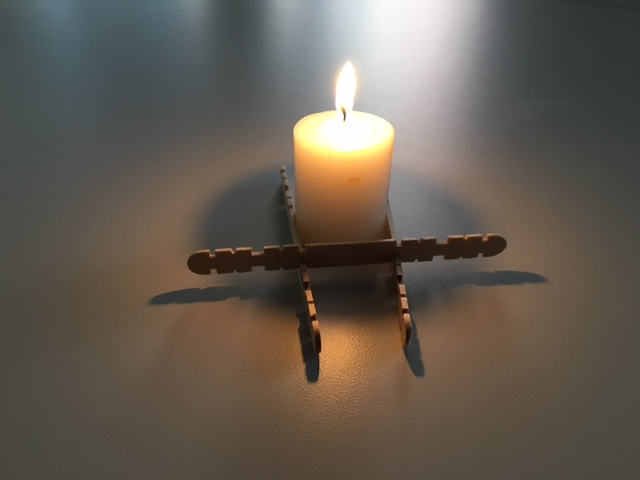
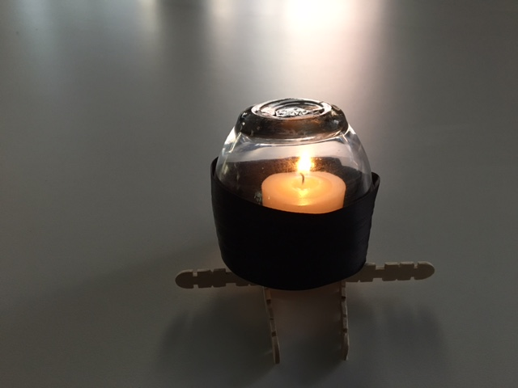
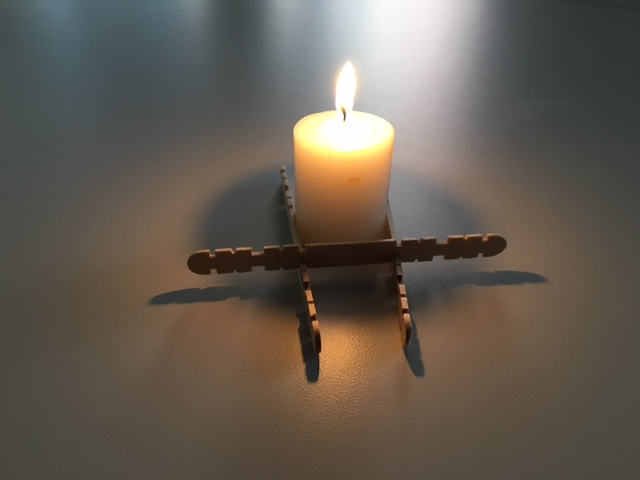
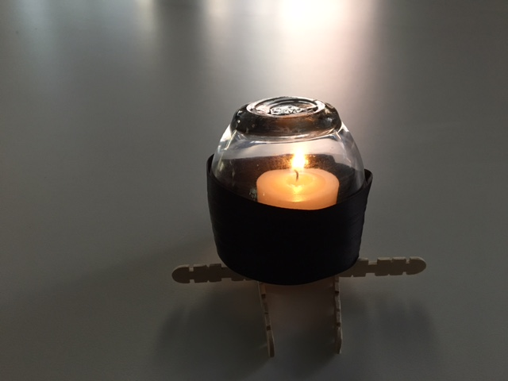

I'm still not entirely sure of my direction, but I think it's clearing up. I chose to iterate on candle form, as I decided that it may be interesting to consider how different chemicals could be embedded in a layered candle, so that the candle burns with a different colour, depending on where you light it. I also wanted to experiment with the blue foam. I produced about 10 blue foam form iterations, 7 of which were worth picturing below:
Next, I decided to iterate on augmenting candle light. I took a trip to a craft store and made many purchases -- from LED candles, to clay, to mirrors, to ribbon, to glass, etc. The idea was to experiment with containing and reflecting light with these different materials and surfaces. My reason for picking candle light is somewhat obvious -- candles aren't particularly bright or reliable, and they're notoriously hard to direct without dripping wax everywhere. So, I attempted to augment the candle light, and direct it. The LED candles were incredibly disappointing (truly a terrible subsitute for natural light). I believe that the best results came from redirecting the light with mirrors -- it created beautiful refraction patterns on the table surface, and seemed to better distribute the light from the candles.
 


